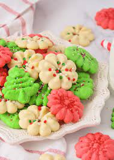

Spritz Cookies

Description
Beautiful and buttery, these classic butter spritz cookies are the perfect treat for a
cookie exchange or special gathering. Creative mix-ins or decorations will make each batch
of spritz cookies one that’s uniquely your own.
Drizzle with melted chocolate, mix in chopped nuts or dried fruit, sprinkle with sparkling
sugar, color them to match the season—however you choose to make these iconic butter cookies,
we know they won't disappoint! Plus, with 72 servings this recipe can be made and shared with
everyone at your next cookie swap.
Ingredients
- 1 cup butter, softened
- 1/2 cup sugar
- 2 1/4 cups all purpose flour
- 1/4 teaspoon salt
- 1 egg
- 1 teaspoon almond extract or vanilla
Steps
-
Heat oven to 400°F. Beat butter and sugar in large bowl with electric mixer on medium
speed, or mix with spoon. Stir in flour, salt, egg, almond extract and a few drops of
food color.
-
Place dough in cookie press. Form desired shapes on ungreased cookie sheet.
-
Bake 5 to 8 minutes or until set but not brown. Immediately remove from cookie
sheet to wire rack. To decorate cookies after baking, use a drop of corn syrup
to attach decorations to cookies.
Home